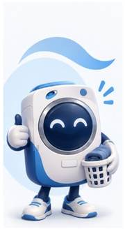

Guias
Passo a passo completo para usar a lavanderia.
Pesquise sua dúvida em linguagem natural ou siga nossos guias. A ideia é simples: encontrar a resposta rápido, usar a lavanderia com tranquilidade e falar com a equipe quando precisar.

Passo a passo completo para usar a lavanderia.
Respostas rápidas para situações do dia a dia.
Não encontrou? Envie a dúvida já organizada para nossa equipe.
A pesquisa entende os principais assuntos da operação e devolve uma orientação curta. Se não houver resposta segura, você pode continuar direto com a equipe no WhatsApp.
Lav — Assistente SeuLavAjuda rápida e orientadaVeja a sequência correta desde a escolha da lavadora ou secadora até o pagamento, espera do ciclo e acompanhamento pelo aplicativo.

Conteúdo organizado para consultar sempre que precisar. Os itens podem ser ampliados e alterados no futuro sem reconstruir o layout.
Pequenos cuidados ajudam você a ter melhores resultados e deixam a lavanderia mais prática para todos.
Preencha só o essencial. A Central prepara uma mensagem organizada para abrir no WhatsApp da SeuLav.